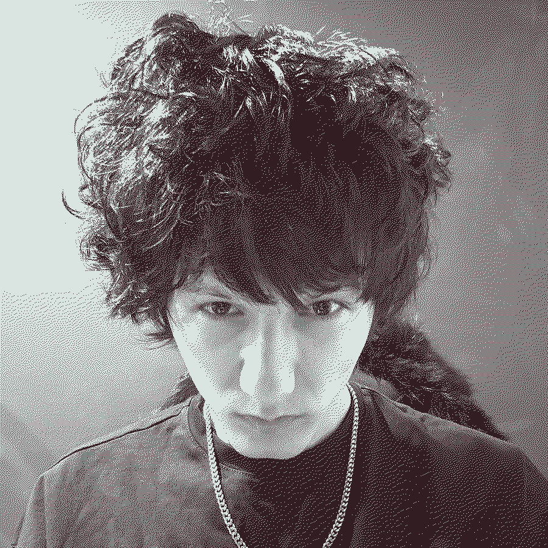

два кадра.
одна история.
errorclub / artist 02за пределами шума
emohead
Музыка и всё, что рядом.
first signal / 01
ПЛЕВАТЬ @traffy
Подключаем звук…SoundCloud ↗
На связи
05 доступны
SoundCloudСлушать ↗
Apple MusicСлушать ↗
VK МузыкаСлушать ↗
ЗвукСлушать ↗
Яндекс МузыкаСлушать ↗
TelegramСкоро —
SpotifyСкоро —
Остальные площадки появятся здесь, когда будут доступны.